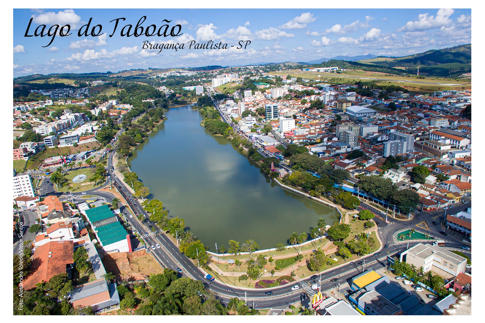

Bragança Paulista é conhecida como uma Cidade turística próxima à Cidade de São Paulo, seus principais pontos turísticos são:

Bragança Paulista também é repleta de universidades e escolas, sendo uma Cidade que atrai pessoas de fora para estudar.
| Universidades | |
|---|---|
| Universidade São Francisco | Desde 1985 |
| FESB | Desde 1967 |
| FATEC | Desde 1978 |
| Escolas | |
|---|---|
| Alegretti | Desde 1985 |
| Dom José Maurício da Rocha | Desde 1969 |
| Paulo Silva | Desde 1961 |
A população de Bragança Paulista é de aproximadamente 171 mil pessoas, suas principais características são: